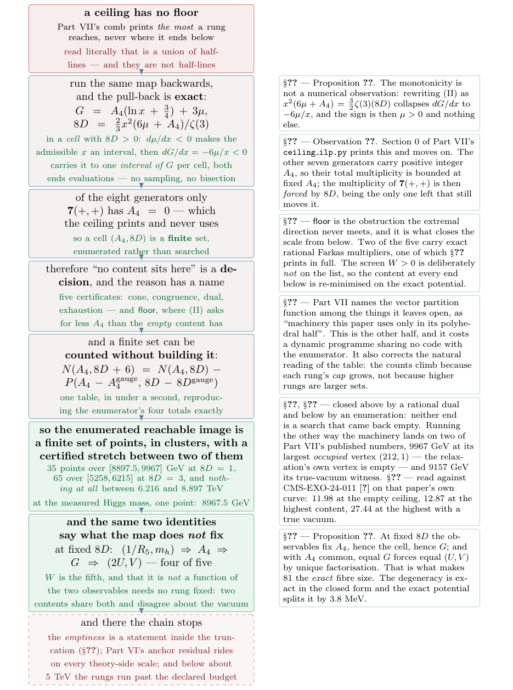
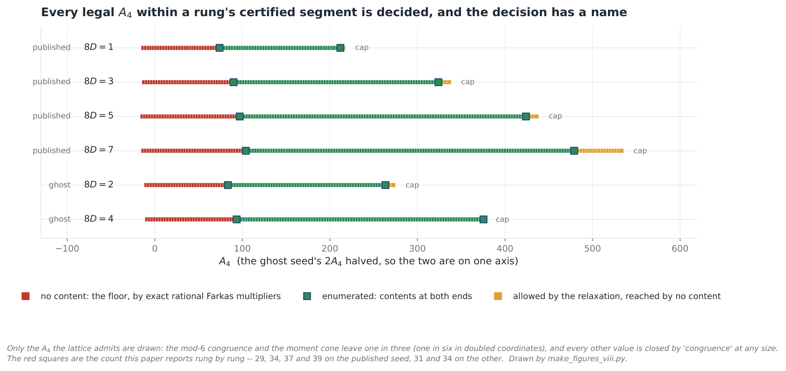
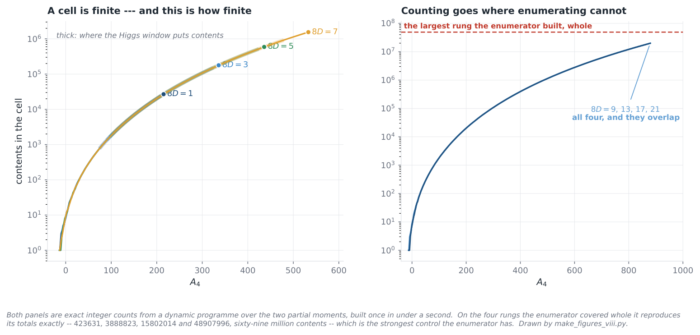
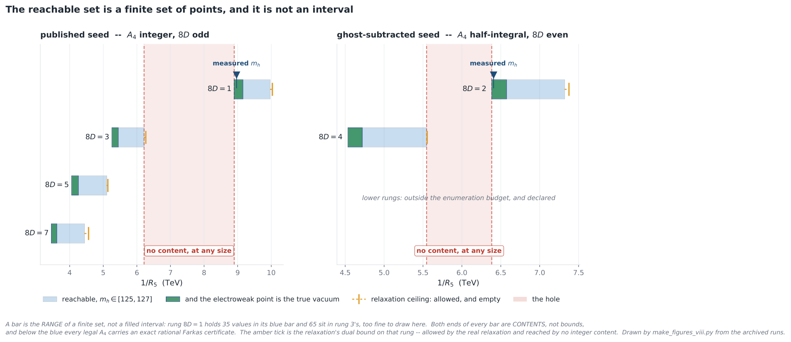
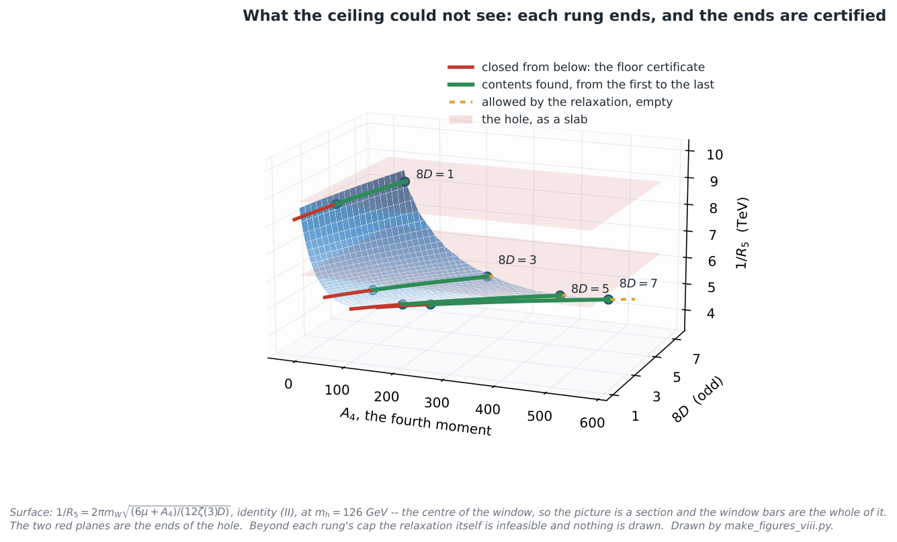
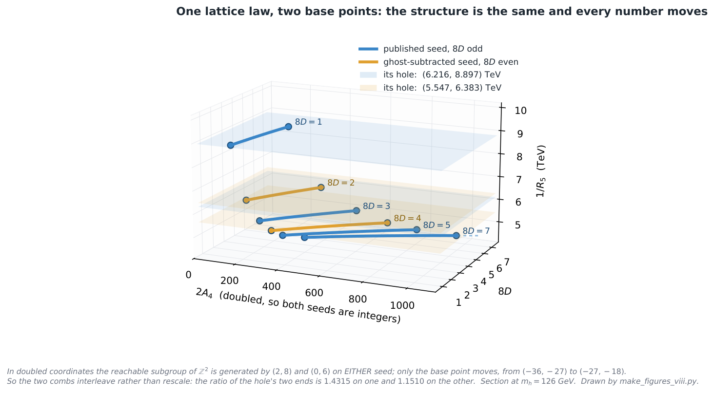

A Certified 2.68 TeV Gap in the Closed-Form Map of the Compactification Scale in SU(7) Grand Gauge-Higgs Unification, and the Invariant Its Two Observables Cannot See (Part VIII)
At a glance
What the paper contributes
Part VII of the series bounds the compactification scale of the SU(7) grand gauge-Higgs model of Komori and Maru from above. This paper runs the same closed-form map backwards: given a target (1/R5, mh), it returns a bulk content or a named certificate that none exists. Every emptiness statement is about the closed form, not yet about the untruncated model, and the paper says so.
- The inversion is exact (Proposition 1): on a cell with 8D > 0 a target box pulls back to one interval of the moment G, both ends evaluations.
- “No content” is a decision (Observation 1): only 7(+,+) has A4 = 0, so a cell is finite; the five certificates are cone, congruence, an exact rational Farkas pair, exhaustion and floor, and one dual certificate is printed in full.
- A certified gap of the closed-form map: on the published seed the enumerated image is 35 points in [8897.5, 9967] GeV (8D = 1) and 65 in [5258, 6215] GeV (8D = 3), and nothing lies in (6.216, 8.897) TeV. At the measured Higgs mass one point remains, 1/R5 = 8967.5 GeV, carried by 81 contents with the same one-loop potential.
- What the two observables cannot see (Proposition 3): on a fixed rung they fix four of the five complete invariants, but two contents share both and disagree about the vacuum invariant W.
- Counting without building (Proposition 2, the classical restricted-partition recursion): a cell is counted by dynamic programming, which reproduces the enumerator’s totals over 69 million contents.
🚀 Start here: Proposition 1: on a cell with 8D > 0, a target box pulls back to one interval of G, with both ends evaluations.
Main results:
- Proposition 1: on a cell with 8D > 0, a target box pulls back to one interval of G, with both ends evaluations
- Observation 1: a cell (A₄, 8D) is a finite set, because only 7(+,+) has A₄ = 0
- Proposition 3: on a fixed rung the two observables fix A₄, G and (U, V), and leave only W free
🗺️ Map of the results (click a box to go to it)
Dependencies in the written proof: an arrow A → B means that this proof of B uses A. Every result rests on its written proof; the tags record what was checked besides, and each statement's “Evidence & scope” block says how far. The colour of a box is its strongest tag, in the order above; the tags in the box give the rest. Boxes with a thick border are the main results; click a box to read the statement.
📐 Setting (copied from the paper, §3)
Everything the potential predicts factors through the moments. With \(x = \pi {\alpha _{\min }}\) and \(\mu = m_h^2/(K\pi ^2)^2\), \(K = (\sqrt3/2\pi ^3)m_W g_4\), Part VII’s two logarithm-free identities are
A target box in \((1/R_5, m_h)\) is a box in \((x,\mu )\), since \(1/R_5 = 2\pi m_W/x\). A rung in what follows is a value of \(8D\), and \(A_4\) runs along it; a single \((A_4, 8D)\) is a cell of that rung. (§4) A bulk content is a non-negative integer combination of eight generators, one for each pairing of the four \(SU(7)\) representations [ 1 ] admits in the bulk — \(\mathbf{7}\), \(\mathbf{28}\), \(\mathbf{48}\), \(\mathbf{84}\) — with the two orbifold parities \((+,+)\) and \((+,-)\). […] of the eight generators, only \(\mathbf{7}(+,+)\) has \(A_4 = 0\), and the other seven have positive integer \(A_4\). (§5) The count is a vector partition function — the number of \(n \in {\mathbb {Z}}^8_{\ge 0}\) with \(\sum _j n_j A_4^{(j)} = A_4 - A_4^{\rm gauge}\) and \(\sum _j n_j (8D)^{(j)} = 8D - 8D^{\rm gauge}\). (§6) Two bulk contents have the same one-loop potential, as a function of \(\alpha \), if and only if they agree on all five of \((A_4, 8D, 2U, V, 2W)\). […] Part VII’s own \(G = \tfrac {25}{12}A_4 - U\ln 2 - V\ln 3\).
3 The inversion
Fix a cell \((A_4, 8D)\) with \(8D {\gt} 0\), and move along the curve (2)(II). Then
so \(G\) is strictly decreasing in \(x\). The admissible \(x\) are themselves an interval, because solving (2)(II) for \(\mu \) gives
which makes \(\{ x{\gt}0 : \mu (x) \in [\mu _-,\mu _+]\} \) an interval; intersecting it with \([x_-,x_+]\) leaves an interval \([x_{\min }, x_{\max }]\) when that intersection is non-empty. Hence the set of \(G\) a target box admits on this cell is the interval \([\, G(x_{\max }),\, G(x_{\min })\, ]\), and both ends are evaluations. When the intersection is empty the cell admits no \(G\) at all, and the target has no content there — which is a decision and not a failed search, by §4.
🆕 Classical and new: the paper lists the exactness of the inversion among what is ours (§1, item 1); the identities (I), (II) are Part VII’s.
↳ Not used by another result of the paper.
🖼️ Figure 1

The chain, and every link is something the extremal direction never had to decide. It is Part VII’s opening chain read backwards, and each box is forced by the one above rather than chosen: monotonicity of \(\mu \) and then of \(G\) makes the pull-back one interval per cell, one generator with \(A_4=0\) makes a cell finite, finiteness makes “no content exists” a decision with a named certificate, and only then does it make sense to ask how finite. The last green box is the same two identities read for what they leave undetermined, which is the second half of the title. The red box is not a link but the edge of the chain.
🛡️ Evidence & scope
Program: the inverse map on the published seed: the five certificates, the clusters, the gap, the worked Farkas certificate, the design table; finiteness of a cell (Observation 1) used throughout. scripts/inverse_design.py
Program: the same on both gauge seeds in doubled coordinates. scripts/reachable_set.py
Program: every interval printed as empty is contained in the one the run certifies. scripts/check_intervals.py
Program: the displayed formulas against their Python reading and the archived run; each link perturbed separately and required to fail. scripts/check_formulas.py, scripts/falsify_formulas.py
4 Why “no content” is a decision
Fix a cell \((A_4, 8D)\) inside the moment cone, so that \(A_4 \ge A_4^{\rm gauge}\). The seven generators with \(A_4^{(j)} \ge 1\) satisfy \(\sum _j n_j A_4^{(j)} = A_4 - A_4^{\rm gauge}\) with every term non-negative, so \(\sum _j n_j\) is bounded and each of the seven with it; and the multiplicity of \(\mathbf{7}(+,+)\) is then forced by \(8D\), since among the generators left it is the only one that still moves it. The cell is a finite set, enumerated rather than searched.
🆕 Classical and new: the paper calls it ours: Part VII’s lattice dump prints the fact and never uses it (§4, §9).
↳ Used in: Proposition 1, Proposition 2
🛡️ Evidence & scope
Program: the four admissible segments 8D = 1, 3, 5, 7 enumerated whole; on the 3.0 TeV target, the 9 dual-closed rungs brute-forced: 0 contents. scripts/inverse_design.py
5 How large is a cell
Write \(P(T,Q)\) for the number of contents built from the seven generators with \(A_4^{(j)}\ge 1\) alone that reach \((T,Q) = (A_4 - A_4^{\rm gauge},\, 8D - 8D^{\rm gauge})\). Then
🆕 Classical and new: not claimed: the classical restricted-partition recursion [BeckRobins] in its vector form; the paper claims only the measurement that the correction term is 1 or 2 (§9).
↳ Not used by another result of the paper.
🖼️ Figure 2

Every legal \(A_4\) within a rung’s certified segment is decided, and the decision has a name. Only the \(A_4\) the lattice admits are drawn: the congruence and the moment cone together leave one value in three, and every other value is closed by congruence at any size. Red: below the first occupied \(A_4\), every legal value carries exact rational multipliers — \(29\), \(34\), \(37\) and \(39\) of them on the four rungs of the published seed, \(31\) and \(34\) on the two enumerated rungs of the other. Green: the stretch the enumerator covered, with contents at both ends. Amber: between the last content and the relaxation’s own cap, allowed by the real relaxation and reached by nothing integral — which is the same emptiness Part VII finds at its vertex, seen here along the whole certified segment rather than at one point. Drawn by make_figures_viii.py, whose lattice arithmetic is checked against the archived runs before anything is plotted.
🛡️ Evidence & scope
Program: the counting table by dynamic programming; the recursion checked on 4694 grid points; the four enumerator totals reproduced exactly (69 million contents). scripts/rung_census.py
6 The reachable set on the published seed
Fix \(8D\). Two contents with the same \((1/R_5, m_h)\) have the same \(A_4\), hence the same \(G\), hence the same \((U,V)\). So at fixed \(8D\) the two observables determine four of the five invariants — \(A_4\), \(8D\), \(2U\), \(V\) — and leave only \(W\) free.
Lean · ours, in partshow
added to the Lean repository after publication (21-oct-2026): 2^a 3^b = 1 with integer exponents forces a = b = 0
✅ Checked when this page was built: TwoThreeIndependence.lean compiles with Lean 4.35.0, no errors, no sorry. Axioms — two_zpow_mul_three_zpow_eq_one: propext, Classical.choice, Quot.sound.
Reproduce: Lean 4.35.0, Mathlib f0b4c8150aa0; in that Lean project, lake env lean TwoThreeIndependence.lean (SHA-256 of the compiled file: 514d8acb5a394b61…; a source page on this site may show it with comments edited, under its own hash).
🆕 Classical and new: the arithmetic is unique factorisation and "is nobody’s"; what the paper claims is noticing that the census of the measured-mass fibre depends on it (Acknowledgements, §9).
↳ Not used by another result of the paper.
🖼️ Figure 3

A cell is finite, and this is how finite. Left: the counting function on the four rungs §?? enumerates, with the stretch the Higgs window populates drawn thick. The four curves lie on top of one another, which is Proposition 2: raising \(8D\) by six removes only the contents that carried no \(\mathbf{7}(+,+)\), and there are one or two of those where the cell holds tens of thousands. Right: the same table continued past where the enumerator can go — four rungs are drawn and they coincide for the same reason, which is why one label serves for all four. Both panels are exact integer counts. Drawn by make_figures_viii.py.
🖼️ Figure 4

The reachable set, on the axis it lives on. One bar per rung, and a bar is a range and not a filled interval: pale blue spans the \(35\) values rung one reaches with \(m_h\) in [ 1 ] ’s window and the \(65\) of rung three, which are too finely spaced to resolve at this width; green spans the part where the electroweak point is also the deepest place on the domain — nine of the \(35\) on rung one. The amber tick is the relaxation’s dual bound — allowed by the real relaxation and reached by no integer content, on every rung and not only at Part VII’s vertex. The red band is ??, and what makes it different in kind from the gaps inside a blue bar is that it is forty-five times wider and carries a certificate. Both ends of every blue bar are contents. On the candidate seed the enumerator stops after two rungs, which is said in the panel rather than left as white space: below \(8D=4\) the cells run to \(10^7\) contents and past the declared budget. Drawn by make_figures_viii.py.
🖼️ Figure 5

The same thing over the lattice it lives on. Once \(m_h\) is pinned, identity (II) makes \(1/R_5\) an explicit surface over the two quantised moments, with no minimisation left in it — that surface is Part VII’s. What the inverse direction adds is drawn on it: red where the floor argument closes the rung, green from the first content to the last, amber where the relaxation still allows and nothing integral lands. The two translucent planes are the ends of ??, so the hole is a layer of scale that the surface passes through and no content sits on. The section is taken at the centre of the Higgs window; Figure ?? is the whole of it. Drawn by make_figures_viii.py.
🖼️ Figure 6

One lattice law, two base points. The two seeds share the reachable subgroup of \({\mathbb {Z}}^2\) and differ only in where it is anchored, so in doubled coordinates their combs interleave rather than sit one inside the other — the published seed on the odd rungs, the candidate on the even ones. Each carries its own pair of window ends and its own hole, drawn as translucent planes. The two holes are not a rescaling of one another: the ratio of their ends is \(1.4315\) against \(1.1510\). Section at the centre of the Higgs window. Drawn by make_figures_viii.py.
🛡️ Evidence & scope
Program: distinct (2U, V) = distinct G on all four rungs (3029, 8769, 16938, 28601); no cross-rung collision among the 314 points; the degenerate pair 2W = +5 / −27 and its exact-potential split of 3.8 MeV. scripts/what_the_observables_miss.py
References
- 1
Y. Komori, N. Maru, \(SU(7)\) Grand Gauge-Higgs Unification, NITEP 240, arXiv:2503.04090.
- 2
N. S. Manton, A new six-dimensional approach to the Weinberg–Salam model, Nucl. Phys. B158 (1979) 141. 🔎 find it
- 3
Y. Hosotani, Dynamical mass generation by compact extra dimensions, Phys. Lett. B126 (1983) 309. 🔎 find it
- 4
G. Cacciapaglia, A. S. Cornell, A. Deandrea, W. Isnard, R. Pasechnik, A. Preda, Z.-W. Wang, General vacuum stability of orbifold gauge breaking and application to asymptotic grand unification, arXiv:2409.16137.
- 5
N. Arkani-Hamed, G. L. Kane, J. Thaler, L.-T. Wang, Supersymmetry and the LHC Inverse Problem, JHEP 08 (2006) 070, arXiv:hep-ph/0512190 — the inverse map from signatures to model space, and the islands-with-degeneracies picture of its fibres.
- 6
C. Gross, A. Hebecker, A realistic unified gauge coupling from the micro-landscape of orbifold GUTs, Nucl. Phys. B821 (2009) 354, arXiv:0812.4267 — a discrete scan over bulk-versus-brane assignments, reporting the subset of models that come out realistic rather than the image of a prediction.
- 7
A. Schrijver, Theory of Linear and Integer Programming, Wiley (1986) — rational LP duality and Farkas certificates, and the index of a sublattice. 🔎 find it
- 8
B. Sturmfels, On vector partition functions, J. Combin. Theory Ser. A 72 (1995) 302 — the counting function of §?? is one of these, and its piecewise quasi-polynomial structure is the property that section measures and does not claim. 🔎 find it
- 9
M. Beck, S. Robins, Computing the Continuous Discretely: Integer-Point Enumeration in Polyhedra, 2nd ed., Springer (2015) — the restricted partition function and its recursion \(p_{\mathcal A}(n,k) = p_{\mathcal A}(n-a_k,k) + p_{\mathcal A}(n,k-1)\), of which Proposition 2 is the vector case for the one generator with \(A_4=0\). The identity is classical; what §?? contributes is the measurement of how small the correction term is on this lattice, and what that corrects.
- 10
S. Navas et al. (Particle Data Group), Review of Particle Physics, Phys. Rev. D 110 (2024) 030001. 🔎 find it
- 11
C. Marín, Anomaly- and Tadpole-Compatible Fermion Completion of Six-Dimensional \(SU(4)\) Gauge-Higgs Unification, Part I of this series, Zenodo, doi:10.5281/zenodo.21432625.
- 12
C. Marín, Three Gates to a Quark Generation: An Exact Criterion for Which \(SU(4)\) Representations Contain the Standard Model, Part II of this series, Zenodo, doi:10.5281/zenodo.21432627.
- 13
C. Marín, A Centre-Charge Selection Rule for the Wilson-Line Potential: The Fundamental Domain of Gauge-Higgs Unification Is Representation-Dependent, Part III of this series, Zenodo, doi:10.5281/zenodo.21438226.
- 14
C. Marín, Schur Functions at \((1,-1,t,t^{-1})\): A Closed Form on the Non-Identity Component of \(O(4)\), Part IV of this series, Zenodo, doi:10.5281/zenodo.21463000.
- 15
C. Marín, What the Higgs Potential Cannot See: Bulk Matter That Cannot Help Select a Boundary Condition, Part V of this series, Zenodo, doi:10.5281/zenodo.21727094.
- 16
C. Marín, Proton Decay in \(SU(7)\) Grand Gauge-Higgs Unification: An Obstruction, Its Minimal Escapes, and the One Row of Their Table 1 That Can Pay for Them, Part VI of this series, Zenodo, doi:10.5281/zenodo.22033302.
- 17
C. Marín, An Upper Bound on the Compactification Scale of \(SU(7)\) Grand Gauge-Higgs Unification, and the Dijet Angular Distribution That Tests It, Part VII of this series, Zenodo, doi:10.5281/zenodo.22087251.
- 18
C. R. Harris et al., Array programming with NumPy, Nature 585 (2020) 357. 🔎 find it
- 19
F. Johansson et al., mpmath: a Python library for arbitrary-precision floating-point arithmetic, version 1.3 (2023), https://mpmath.org. 🔎 find it
- 20
J. D. Hunter, Matplotlib: a 2D graphics environment, Comput. Sci. Eng. 9 (2007) 90. 🔎 find it
- 21
J. Gao, C. S. Li, C.-P. Yuan, NLO QCD corrections to dijet production via quark contact interactions, JHEP 07 (2012) 037, arXiv:1204.4773; program described in arXiv:1301.7263, version 1.0.
- 22
H.-L. Lai, M. Guzzi, J. Huston, Z. Li, P. M. Nadolsky, J. Pumplin, C.-P. Yuan, New parton distributions for collider physics, Phys. Rev. D 82 (2010) 074024, arXiv:1007.2241; set CT10nlo.
- 23
R. D. Ball et al. (NNPDF Collaboration), Parton distributions from high-precision collider data, Eur. Phys. J. C 77 (2017) 663, arXiv:1706.00428; set NNPDF31_nnlo_as_0118.
- 24
A. Buckley, J. Ferrando, S. Lloyd, K. Nordström, B. Page, M. Rüfenacht, M. Schönherr, G. Watt, LHAPDF6: parton density access in the LHC precision era, Eur. Phys. J. C 75 (2015) 132, arXiv:1412.7420; version 6.5.4.
- 25
CMS Collaboration, Measurement of dijet angular distributions and search for beyond the standard model physics in proton-proton collisions at \(\sqrt{s}=13\) TeV, CMS-EXO-24-011, arXiv:2603.25458; \(138\, \mathrm{fb}^{-1}\) — the unfolded distribution, covariance and prediction this paper’s \(\Delta \chi ^2\) is read against, taken from HEPData. It is the measurement Part VII’s curve was built on, and no part of that curve is recomputed here.
- 26
CMS Collaboration, Search for high mass dijet resonances with a new background prediction method in proton-proton collisions at \(\sqrt{s}=13\) TeV, JHEP 05 (2020) 033, arXiv:1911.03947; \(137\, \mathrm{fb}^{-1}\), CMS-EXO-19-012 — a different analysis, and the one read in §?? for the measured dijet mass spectrum and the width-dependent resonance limits.
- 27
ATLAS Collaboration, Search for new resonances in mass distributions of jet pairs using \(139\, \mathrm{fb}^{-1}\) of \(pp\) collisions at \(\sqrt{s}=13\) TeV with the ATLAS detector, JHEP 03 (2020) 145, arXiv:1910.08447 — it gives Gaussian-shape limits by relative width, and the sentence quoted in §?? is that paper’s own description, in the caption of its truncated-limit figure, of why the widest of them stops at high mass.
- 28
S. Das Bakshi, J. Chakrabortty, M. Spannowsky, Classifying Standard Model extensions effectively with precision observables, Phys. Rev. D 103 (2021) 056019, arXiv:2012.03839 — degeneracy of models under a finite set of observables, and the two ways out that the effective-theory side has: more loops, or operators of higher dimension. Neither is available for the invariant at issue here.